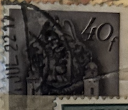
| SOURCE | TITLE| IMAGE MATCH | click to source page |
| eBay | 1996 Winnie The Pooh Disney World Solid Pewter Canada 45 Cent Stamp Fob Keychain | eBay | 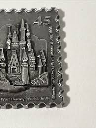 |
| eBay | LOT of 2 ODEN Brass 8 Cent Postage Stamp Belt Buckles | eBay | 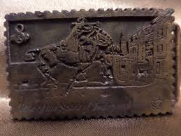 |
| I'll put this here because Facebook wasn't much help, TIA : r/CRH | 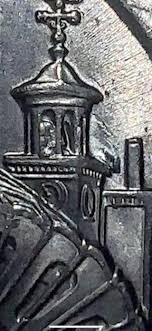 | |
| eBay | Good DUTCH Silver WINDMILL Finial SUGAR SHOVEL-Signed WE-NR | eBay | 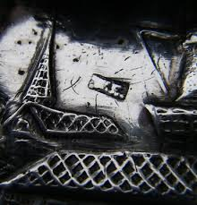 |
| eBay | ANOTHER VINTAGE MANS BELT BUCKLE VERY RARE FIND | eBay | 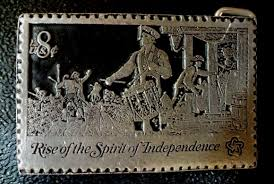 |
| eBay | VTG Rise of Spirit of Independence image 8c US Stamp Solid Pewter Belt Buckle | eBay | 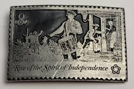 |
| eBay | GERMAN BUDERUS CAST IRON 2005 TITLED COMMUNCATION ANNUAL WALL PLAQUE ART RELIEF | eBay | 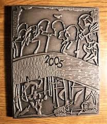 |
| Coin Auction Help | 1916-D Mercury Dime Value Key Date – COIN HelpU YouTube Channel | 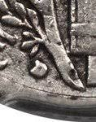 |
| eBay | Vtg Belt Buckle BARN 1984 Berfamot Brass Works Pewter Farming T 149 USA Farmer | eBay | 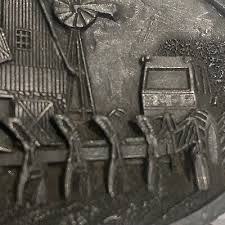 |
| Etsy | Buy Sm New Pumpjack Roughneck Oil Derrick Rig Oilfield 70s Nos Vintage Belt Buckle Gas Energy Texas Field Well Drilling Worker Fuel Online in India - Etsy | 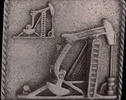 |
| eBay | Vintage Sterling Silver Iowa .925 State Souvenir Charm New Old Stock | eBay | 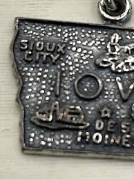 |
| eBay | 1-OZ..SILVER .999 AUGUSTA GEORGIA COCA COLA 75TH ANNIVERSARY BAR # 2153+ GOLD | eBay | 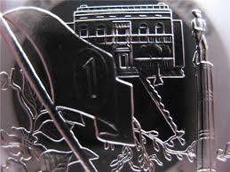 |
| eBay | Vintage Quebec Canada Souvenir Tray Made in Japan Anne Deaupre Basilica Trinket | eBay | 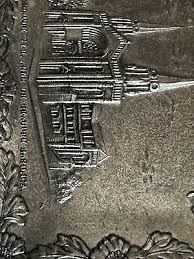 |
| eBay | Jefferson 2023 errores de níquel roca en cúpula colmena en el lado golpe a través de la abeja | eBay | 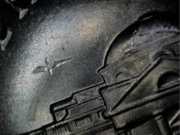 |
| eBay | 1988 The great archaeologists / sculpture by Giorgio de Chirico,Monaco,1889,MNH | eBay | 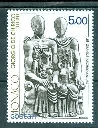 |
| eBay | Printing Letterpress Printers Block $8000 of Wasted Material.... | eBay | 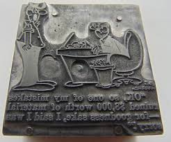 |
| eBay | FUJEIRA 1970 620 A Easter Ostern Religion Christus Birth SILVER Hl. 3 Könige MNH | eBay | 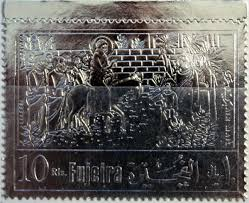 |
| Collector Coin Database | Proof silver 5 euro coins. The 5 euro coin series from San Marino | 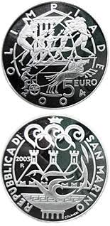 |
| Národná banka Slovenska (NBS) | Set of commemorative coins with the motifs of Slovak banknotes – Národná banka Slovenska | 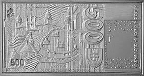 |
| eBay | MONACO 1988, ART: DE CHIRICO: "LES GRANDS ARCHEOLOGUES" SCULPTURE, Sc 1647, MNH | eBay | 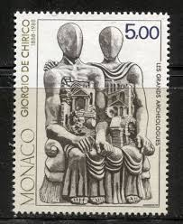 |
| Coin Community | New Zealand Decimal Coin Varieties / Errors - Page 2 - Coin Community Forum | 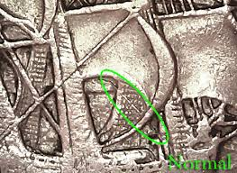 |
| eBay | 2Pac Tupac Shakur All Eyez On Me Metal Belt Buckle | eBay | 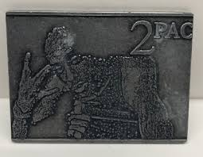 |
| eBay.de | Vatikan Vatican 2010 ** Mi.1665 Ostern Easter Kreuz Cross Kunst Art [sv0939] | eBay.de | 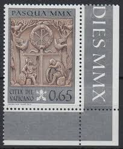 |
| eBay | Vintage SCOTTYS CASTLE Death Valley California Souvenir Key Chain Token- 1.1/4" | eBay | 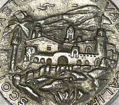 |
| John Moran Auctioneers & Appraisers | Lot - Anatol Krasnyansky (1930-2023), "San Gimignano, Italy," Pewter on bronze plaque, 10" H x 8.25" W | 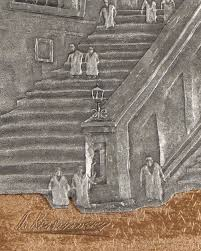 |
| Philatelie Liechtenstein | Liechtenstein Palace, Vienna - 1999 - 1980 - Philatelie Liechtenstein | 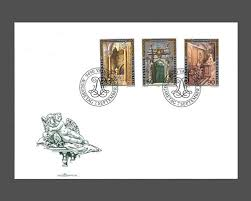 |
| 2017 P Ellis Island Quarter overweight? : r/CRH | 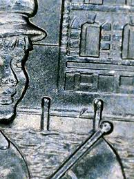 | |
| eBay | 2021 P Washington Quarter Heavy REV Feeder Finger Scrape Error 46500014 | eBay | 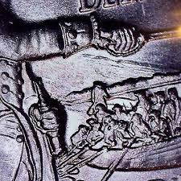 |
| Museum of International Folk Art | Roof ornament, ceramic church – Works – eMuseum | 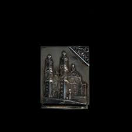 |
| eBay | Siskiyou Pewter Belt Buckle RAILROADS BUILT AMERICA 1984 Vintage | eBay | 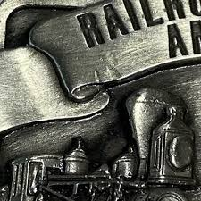 |
| eBay | Rouble XXII Olympic Games, Moscow 1980, Error on clock, 6 (VI) instead of 4(IV) | eBay | 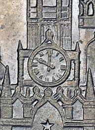 |
| Online Encyclopedia of Silver Marks | Wine Ladle - www.925-1000.com | 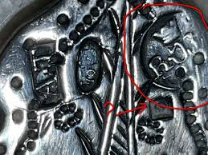 |
| eBay | Vintage Postal Service Advertisement Printer's Plate Block. Very Unusual! | eBay | 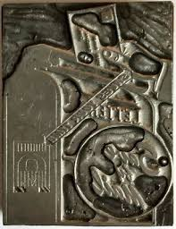 |
| eBay | Vintage McCormick Deering Cylinder Hay Rake Printers Block Very Nice Antique | eBay | 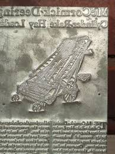 |
| JM Bullion | 2 oz The Thinker Silver Stackable (New) l JM Bullion™ | 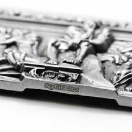 |
| eBay | Ducks Unlimited 1991 Metal Stamp Special Membership Edition Drinking Water | eBay | 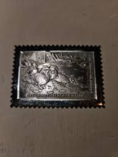 |
| Amazon.com | Amazon.com: Tual: CDs y Vinilo | 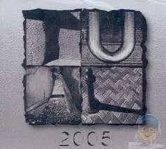 |
| eBay | 2019-P Lowell Massachusetts Die Chip Error/Variety Washington ATB Quarter | eBay | 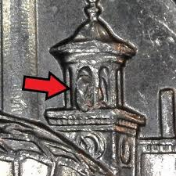 |
| eBay | D412847 Spain Maximum Card Arqueta de Carlomagno Aquisgran Germany | eBay | 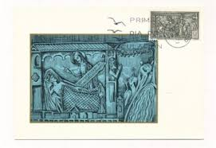 |
| eBay | United Arab Emirates 1970's MNH Fujeira Space Ship Stamps Block | eBay | 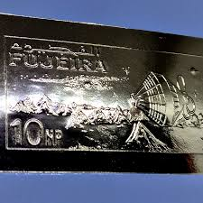 |
| Wordnik | rial - definition and meaning | 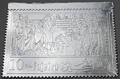 |
| VCoins | France, Medal, G. Puccini, Musique, 1991, Proof, , Vermeil | Tokens & Medals | 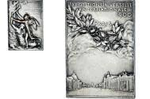 |
| eBay | King of Poland - Władysław II - by Ewa Olszewska - Borys / Bronze Medal / N112 | eBay | 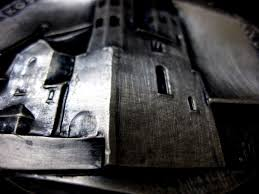 |
| eBay | 1996 Winnie The Pooh Disney World Solid Pewter Canada 45 Cent Stamp Fob Keychain | eBay | 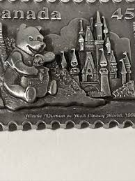 |
| London Coins | England : Buy and Sell Medals : Auction Prices | 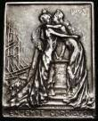 |
| Coins and Canada | Coins and Canada - 50 cents 1963 - Proof, Proof-like, Specimen, Brilliant uncirculated | 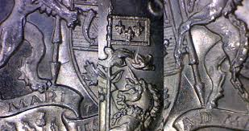 |
| DirectIndustry | Décor label - Etiq' Etains - self-adhesive / tin / flexible | 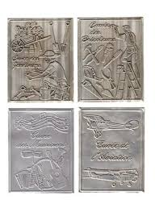 |
| Bertolami Fine Art - Casa d'Aste | P Etiopia Italiana V-IX Maggio 40 x 38 mm - Auction Minting Dies from The Historic Lorioli Medal Factory (1919-1950) - Bertolami Fine Art - Casa d'Aste | 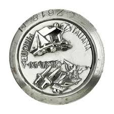 |
| eBay | Antique German 14.5" x 12.5" Embossed Pewter Picture Blacksmith w/ Oak Frame | eBay | 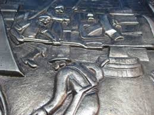 |
| eBay | Old Garage Vintage 1940's Service Station Advertising Printers Print Block | eBay | |
| eBay | Error coins die clash | eBay | |
| IG Stamps | 2001 Occasions Ingots Presentation Pack Number MO5 | |
| ucoin.net | 1 litas 2009 - Vilnius, Lithuania | |
| eBay | D-DAY LANDINGS .999 Fine/Pure TITANIUM Coin. One Troy Ounce 31.1g. Bullion | eBay | |
| YouTube | Actif - YouTube | |
| Carla Jean Pittman Wood (carlajeanb21late) - Profile | Pinterest | ||
| eBay | Rare 1984 Great Ages Of Man Mardi Gras Token Aluminum #ti1 | eBay | |
| Coin Community | Two 1968 Proof Washington Quarters, Different Dies? - Coin Community Forum | |
| eBay | 1977 Village Design, Metzke Letter opener | eBay | |
| Auctionet | SALVADOR DALÍ. 10 COMMANDMENTS SILVER MEDALS 999 SILVER. Silver & Metals - Silver - Auctionet |